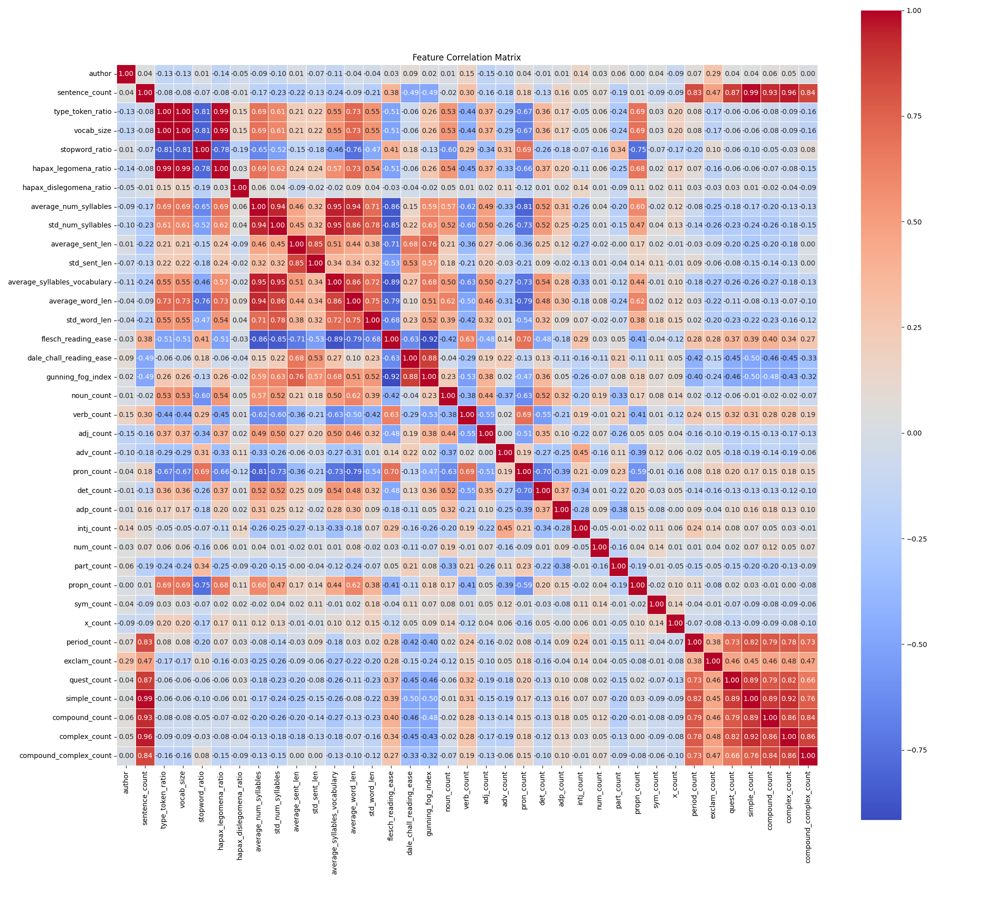

Feature Engineering
The models used in this work rely on stylometric features extracted from the raw texts. These are split into several categories: vocabulary, readability, and tagging.
Vocabulary
The vocabulary features start with the Type Token Ratio (TTR). This statistic was first used in the 1950s and has since become a staple in textual features (Cunningham and Haley, 2020). This is the ratio of the number of unique words divided by the total words in the text. It is a well-accepted measure of vocabulary diversity (Cunningham and Haley, 2020). Additionally, the raw number of unique words is included in the features.
The next feature is the stop word ratio, or the ratio of stop words to total words. This was introduced in the foundational work in identifying the authors of the anonymous Federalist Papers in 1966 (Kendall et al.) and continues to be in use today. It is still popular because it is “immune to topic bias” (Koppel et al., 2011).
The next feature is the Hapax Legomena: the number of words used only once in the text (Mardaga, 2012). The name is such because this metric has existed since before the time of Alexander the Great (Mardaga, 2012). The number of words used only twice, or Dislegomena, are also recorded (Mardaga, 2012).
Readability
The first measure of readability is the average number of syllables per word. This is an important part of many modern readability measures. It was suggested as a primary measure of readability for the military in 1975 (Kincaid et al.).
Sentence length is another very common measure of an author’s style (Holmes, 1998). The average and standard deviation of the length are included in the dataset. Average word length and word length standard deviation are also commonly used and included in the dataset (Stamatatos, 2009).
Additionally, there are several standard readability formulas that are included in the dataset. The first is the Flesch Readability Score, which measures the difficulty and complexity of reading a set of text (Eleyan et al., 2020). While this formula has been in use since the early days of stylometry, it is still a standard in readability measurement (Jindal and MacDermid, 2017). It is based on average sentence length and number of syllables (Eleyan et al., 2020).
The second readability calculation is the Dale-Chall Readability Score. This score is supposed to output the suggested grade level of a written work (Gencer, 2024). This formula uses a base list of words deemed suitable for 4th or 5th grade readers and compares how many words are harder than what is on the list (Gencer, 2024). The corpus is taken from ReadabilityFormulas.com (2025).
The final readability measure included in the dataset is the Gunning Fog Index. This measurement marks words as difficult based on their syllables and the number of words per sentence (Plotnikov, 2020). Although developed in the 1940s (Gunning, 1969), it is popular in small sample authorship analysis (Goh et al., 2007).
Tagging
The final section of data in the dataset is counts of tagged items in the text. The first set of tag counts included are parts of speech. These are very important because each author has their own unique use of sentence structure and phraseology that can be seen here (Gholami-Dasgerdi and Feizi-Derakhshi, 2021). For example, part of speech tagging is all that is needed to classify verse and prose (Chen et al., 2024).
The next group of tagged items are counts of tagged punctuation types. These include periods, exclamations and questions. This is a very common and useful feature that is used for differentiating writing style (Stamatatos, 2009).
The final category of tagged items is sentence structure. Each sentence is categorized as simple, compound, complex or compound-complex. This has been used very effectively in previous work (Feng et al., 2012).
Overview
The features that resulted can be seen in the following correlation heat map. The features do not strongly correlate to the author of the blog so there is no data leaking through in any of the features. This also means that a more complex model will have the ability to link the non-linear relationships and feature interactions taking place under the surface.

References
Adem Gencer. (2024). Readability analysis of ChatGPT’s responses on lung cancer. Scientific Reports, 14(1). https://doi.org/10.1038/s41598-024-67293-2
Agwu-Okoro, N. G. (2025, September 12). The AI DILEMMA IN HIGHER EDUCATION: Balancing Innovation and Authorship. Substack.com; Legal Bytes. https://legalbytes.substack.com/p/the-ai-dilemma-in-higher-education
Cunningham, K. T., & Haley, K. L. (2020). Measuring Lexical Diversity for Discourse Analysis in Aphasia: Moving-Average Type–Token Ratio and Word Information Measure. Journal of Speech, Language, and Hearing Research, 63(3), 710–721. https://doi.org/10.1044/2019_jslhr-19-00226
Eleyan, D., Othman, A., & Eleyan, A. (2020). Enhancing Software Comments Readability Using Flesch Reading Ease Score. Information, 11(9), 430. https://doi.org/10.3390/info11090430
Fabien, M., Villatoro-Tello, E., Motlícek, P., & Parida, S. (2020). BertAA : BERT fine-tuning for Authorship Attribution. International Conference on Networks, 127–137.
Feng, S., Banerjee, R., & Choi, Y. (2012). Characterizing Stylistic Elements in Syntactic Structure. ACL Anthology, 1522–1533. https://aclanthology.org/D12-1139/
Gholami-Dastgerdi, P., & Feizi-Derakhshi, M.-R. (2021). Part of Speech Tagging Using Part of Speech Sequence Graph. Annals of Data Science. https://doi.org/10.1007/s40745-021-00359-4
Goh, O. S., Fung, C. C., Depickere, A., & Wong, K. W. (2007). Using Gunnnig-Fog Index to Assess Instant Messages Readability from ECAs. CiteSeer X (the Pennsylvania State University). https://doi.org/10.1109/icnc.2007.800
Gunning, R. (1969). The Fog Index After Twenty Years. Journal of Business Communication, 6(2), 3–13. https://doi.org/10.1177/002194366900600202
Holmes, D. I. (1998). The Evolution of Stylometry in Humanities Scholarship. Literary and Linguistic Computing, 13(3), 111–117. https://doi.org/10.1093/llc/13.3.111
Hugging Face. (2019). BERT. Huggingface.co. https://huggingface.co/docs/transformers/v4.37.1/en/model_doc/bert#transformers.BertForSequenceClassification
Jafariakinabad, F., & Hua, K. A. (2020). A Self-supervised Representation Learning of Sentence Structure for Authorship Attribution. ArXiv.org. https://arxiv.org/abs/2010.06786
Jindal, P., & MacDermid, J. (2017). Assessing reading levels of health information: uses and limitations of flesch formula. Education for Health, 30(1), 84. https://doi.org/10.4103/1357-6283.210517
Kendall, M. G., Mosteller, F., & Wallace, D. L. (1966). Inference and Disputed Authorship: The Federalist. Biometrics, 22(1), 200. https://doi.org/10.2307/2528232
Khonji, M., Iraqi, Y., & Jones, A. (2015, May 1). An evaluation of authorship attribution using random forests. IEEE Xplore. https://doi.org/10.1109/ICTRC.2015.7156423
Kincaid, J. P., Fishburne, J., Rogers, R. L., & Chissom, B. S. (1975, February 1). Derivation of New Readability Formulas (Automated Readability Index, Fog Count and Flesch Reading Ease Formula) for Navy Enlisted Personnel. Apps.dtic.mil. https://apps.dtic.mil/sti/citations/ADA006655
Koppel, M., Schler, J., & Argamon, S. (2011). Authorship attribution in the wild. Language Resources and Evaluation, 45(1), 83–94. JSTOR. https://doi.org/10.2307/41486029
Luyckx, K., & Daelemans, W. (2008). Authorship Attribution and Verification with Many Authors and Limited Data. ACL Anthology, 513–520. https://aclanthology.org/C08-1065/
Mardaga, H. (2012). Hapax Legomena: A Neglected Field in Biblical Studies. Currents in Biblical Research, 10(2), 264–274. https://doi.org/10.1177/1476993x11398845
Mercer, D. (2017, October 25). David L. Wallace, statistician who helped identify Federalist Papers authors, 1928-2017. University of Chicago News. https://news.uchicago.edu/story/david-l-wallace-statistician-who-helped-identify-federalist-papers-authors-1928-2017
Plotnikov, A. V. (2020). Gunning fog-index measurement of customer reviews of the Russian Agricultural Bank. IOP Conference Series: Earth and Environmental Science, 548(2), 022046. https://doi.org/10.1088/1755-1315/548/2/022046
Rossiello, G., Basile, P., & Semeraro, G. (2017). Centroid-based Text Summarization through Compositionality of Word Embeddings (pp. 12–21). Association for Computational Linguistics. https://aclanthology.org/W17-1003.pdf
Schler, J., Koppel, M., Shlomo Argamon, & Pennebaker, J. W. (2005). Effects of Age and Gender on Blogging. National Conference on Artificial Intelligence, 199–205.
Sohrab, M. G., Miwa, M., & Sasaki, Y. (2015). Centroid-Means-Embedding: An Approach to Infusing Word Embeddings into Features for Text Classification. Lecture Notes in Computer Science, 289–300. https://doi.org/10.1007/978-3-319-18038-0_23
Stamatatos, E. (2009). A survey of modern authorship attribution methods. Journal of the American Society for Information Science and Technology, 60(3), 538–556. https://doi.org/10.1002/asi.21001
Wermer-Colan, A. (2023, November 22). Research Guides: Stylometry Methods and Practices: Home. Guides.temple.edu. https://guides.temple.edu/stylometryfordh